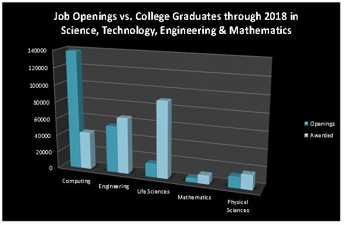

Computing and computer technology are part of just about everything that touches our lives from the cars we drive, to the movies we watch, to the ways businesses and governments deal with us. Understanding different dimensions of computing is part of the necessary skill set for an educated person in the 21st century. Whether you want to be a scientist, develop the latest killer application, or just know what it really means when someone says “the computer made a mistake”, studying computing will provide you with valuable knowledge.
Computing is a discipline that offers rewarding and challenging possibilities for a wide range of people regardless of their range of interests. Computing requires and develops capabilities in solving deep, multidimensional problems requiring imagination and sensitivity to a variety of concerns.
Computing drives innovation in the sciences (human genome project, AIDS vaccine research, environmental monitoring and protection just to mention a few), and also in engineering, business, entertainment and education. If you want to make a positive difference in the world, study computing.
Computing jobs are among the highest paid and have the highest job satisfaction. Computing is very often associated with innovation, and developments in computing tend to drive it. This, in turn, is the key to national competitiveness. The possibilities for future developments are expected to be even greater than they have been in the past.
There actually are more computing jobs than qualified people to fill them in the United States. U.S. IT employment was 17% higher in 2004 than in 1999. The Bureau of Labor Statistics says computing has the greatest potential for new jobs through 2018. Yes, some IT jobs have gone overseas. If you consider the expected growth in computing, it’s easy to see that companies simply need more talent. Don’t miss out on pursuing the large number of open positions available right now, here in the United States expected to be even greater than they have been in the past. 
Having a computing major will provide you with a foundation of knowledge, problem solving and logical thinking that will serve as a competitive advantage to you in your career, in whatever field you choose.
Creating high-quality computing solutions is a highly creative activity, and computing supports creative work in many other fields. The best solutions in computing exhibit high levels of elegance and beauty.
Computing is often about being part of a team that requires people with many different kinds of skills. Yet there is also plenty of space for individual flair and imagination.
An increasing number of universities and employers see successful completion of a computer science course as a sign of academic well-roundedness.
Computing is one of those fields where it is almost impossible to predict what will happen next. This is why we cannot even begin to imagine all the ways that you can make a contribution to it and it can make your life’s work exciting and real.
This list comes from computingcareers.acm.org. Please visit this site if you want additional information about why you should consider a career in this field.